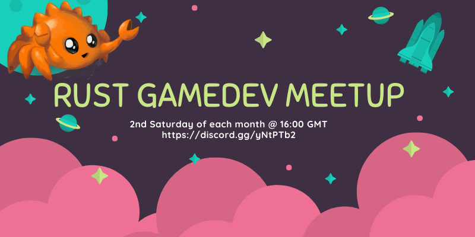
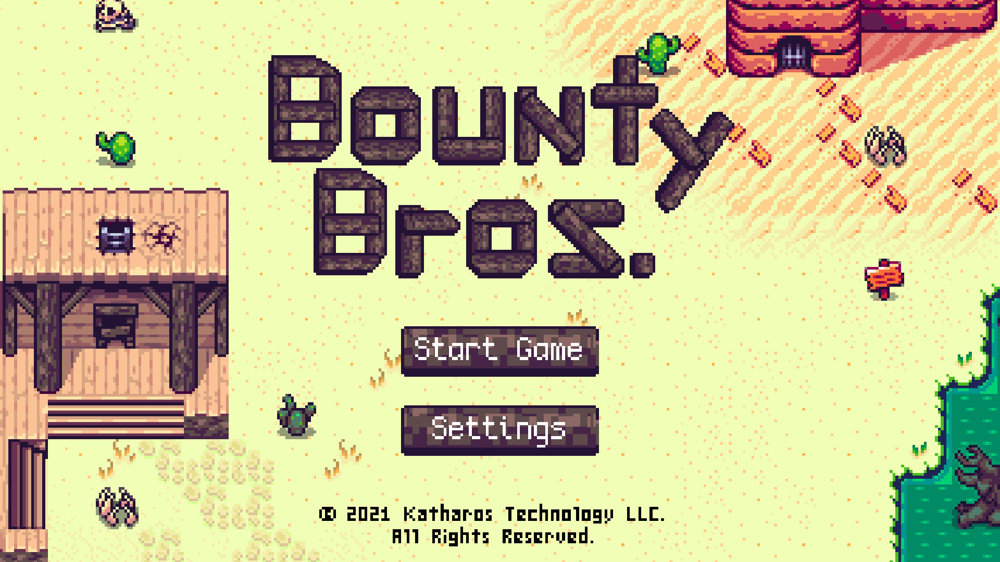
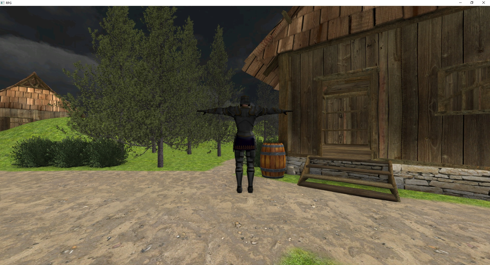
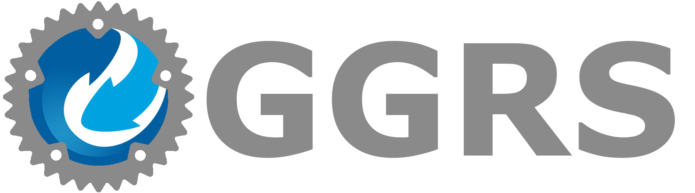

This Month in Rust GameDev #24 - July 2021
Welcome to the 24th issue of the Rust GameDev Workgroup's monthly newsletter. Rust is a systems language pursuing the trifecta: safety, concurrency, and speed. These goals are well-aligned with game development. We hope to build an inviting ecosystem for anyone wishing to use Rust in their development process! Want to get involved? Join the Rust GameDev working group!
You can follow the newsletter creation process by watching the coordination issues. Want something mentioned in the next newsletter? Send us a pull request. Feel free to send PRs about your own projects!
- Game Updates
- Learning Material Updates
- Engine Updates
- Tooling Updates
- Library Updates
- Requests for Contribution
Rust GameDev Meetup

The seventh Rust Gamedev Meetup happened in July. You can watch the recording of the meetup here on Youtube. The meetups take place on the second Saturday every month via the Rust Gamedev Discord server, and are also streamed on Twitch. If you would like to show off what you've been working on at the next meetup on August 14th, fill out this form.
Game Updates
Veloren
 Out for a llama ride
Out for a llama ride
Veloren is an open world, open-source voxel RPG inspired by Dwarf Fortress and Cube World.
In July, work focused on larger tasks that tend to come up between versions. Optimizations were made for networking with compression, and message queue improvements (devblog #127). Modular weapons are in the works, which will allow for much more dynamic ways to choose what you fight with. The project also hit 300k lines of code.
Many contributors are working on the art and asset front, with lots of new SFX, models, and UI elements making their way into the game. Caves are also getting a lot of love, and a bloom feature is being integrated. Some members broke down what they plan to have done by the 0.11 release at the beginning of September, and you can read about that in devblog #130.
July's full weekly devlogs: "This Week In Veloren...": #127, #128, #129, #130.
Zemeroth
Zemeroth is a turn-based hexagonal tactics game, developed by @ozkriff.
This month, an early access version of the game was released as a free download on Google Play - if you have an Android device, give it a try!
Harvest Hero Origins
Harvest Hero Origins is an arcade wave defense game by Gemdrop Games, built in Rust on top of Emerald. A Steam page has recently been made and the game is set to release sometime at the end of this summer.
Battle the oncoming waves of enemies with a friend in local co-op, unlock new playable characters and skins, and make your way to the top of the leaderboard!
Additionally, HHO will be at PAXWest this year, so come check out their booth if you'll be there!
Shroom Kingdom
 Extracting the game assets
Extracting the game assets
Shroom Kingdom (GitHub, Discord, Twitter) is an upcoming play-to-earn video game built with web technologies running on the NEAR Blockchain. In a recent blog post you can read the motivation behind this.
You can play with your favorite plumber brothers. Build your own levels or play levels from others. Every level built on Shroom Kingdom is stored on the blockchain as an NFT.
By playing the game you can either actively earn SHRM tokens via participating in game activities or earn them passively, if other people play or like your levels. The SHRM token will be used to acquire in-game purchases such as unlocking new building blocks or increasing level upload limits.
You can either extract existing assets from Super Mario Maker 2 or use compatible game mod files from e.g. Gamebanana. The asset extractor is already working, but support for more file types needs to be added.
The game will likely be built with Bevy and Rapier compiled to WebAssembly. Next steps include developing a Proof of Concept.
Wicked Potions
 Match ingredients to brew wicked potions
Match ingredients to brew wicked potions
Wicked Potions is a match-three game developed by @nikl_me and jennifervphan for the Bored Pixels Jam 8. They wrote the game using the Bevy game engine and created all of the textures and audio.
The main focus of the game during the one-week jam period were the assets. After the voting period, the developers plan to extend the game mechanics and story a bit more.
The code for the game is available on GitHub.
The Process
 The godot_egui backend powering a new inventory UI for The Process
The godot_egui backend powering a new inventory UI for The Process
The Process by @setzer22 is an upcoming game about factory building, process management, and carrot production, built with Rust using the Godot game engine!
Continuing with last month's migration of old GDScript code to ECS in Rust, this month's main focus has been on porting the GUI code. This has resulted in the birth of a Godot integration for egui that now powers the game's interface.
This month has seen the following changes and improvements:
- Finished migration of character controller code to ECS style. Now with 300% more jumps!
- Implemented better ambient lighting and enable using different skies for radiance and display. This required a forked godot version.
- Implement a new inventory and toolbar interface using egui.
- Integrated the puffin profiler into the game using the godot_egui integration.
Robo Instructus: 2 Years Old

Two years ago Alex Butler released the "Robo Instructus" puzzle game on Steam & itch.io.
This month Alex released a devlog post "Robo Instructus: 2 Years Old" about how well the game did in the last year: Sales by platform/country/OS, player feedback & reviews, etc.
The game also continues to receive updates, the latest 1.33 version includes full 简体中文 & Español language support.
Fish Fight
Fish Fight (Twitter) is a continuation of the demo project known as Fish Game - made by the same team of people (@fedor_games and @erlend_sh), now operating as independents. Their goal is to make a published game, written entirely in Rust and developed as openly as possible. They are hoping to go public with the open source repo within a month or so.
Changes and improvements from the last month:
- Pre-alpha trailer released!
- Loads of new weapons added:
- Mind-controlled Jellyfish
- Kick-bombs (bomberman-style)
- Cursed Skull
- Handcannon
- Gatling gun
- Sproingers
- Pirate Boots
- ..and more!
- Whole new Environmentals system added for map-wide events (mass-shark attack incoming!)
- Physics doc & improvements
Theta Wave
Left: Theta Wave with Amethyst, Right: Theta Wave with Bevy (so far)
Theta Wave is an open-source space shooter game by developers @micah_tigley and @carlosupina. It is one of the showcase games for the Amethyst Engine. In the past month, they finished the "Organization" update and made the decision to start working on porting the game to the Bevy engine. You can find the Bevy version of Theta Wave here.
Progress on this port is going strong - you can find the GitHub issue for the port here.
Bounty Bros.
 Click the image to play the game in your browser!
Bounty Bros. is a prototype, top-down adventure game, developed by Katharos Technology as a testing ground for a future commercial game.
The last two months of development added lots of new features:
- Integrated a new physics system and character controller that allows for smoother character movement.
- Added a new damage system and made cactuses hurt the player.
- Added a life bar and a game over screen.
- Added a pause menu and a fullscreen button.
- Started work on enemy pathfinding.
All the new features can be tested in the latest web demo, and the blog post has the full details of what's new and what's coming next!
Flesh

Flesh is a 2D horizontal SHMUP by @Im_Oab, with a hand-drawn animation style and an organic/fleshy theme.
This month, a Steam page was published for the game - it can now be wishlisted, ahead of a planned release later this year!
Engine Updates
ggez

ggez 0.6 has been released! ggez is a lightweight cross-platform
game framework for making 2D games with minimum friction, with an API
inspired by Love2D.
This release includes many additions, improvements, and bug fixes,
including a MeshBatch type for drawing many instances of the same
geometry, improvements to canvas drawing, updated winit dependencies
that function more smoothly on Linux under Wayland, better error
handling, and more. The whole changelog is available
here.
More importantly, ggez is now maintained by a group of volunteers,
with the original maintainer stepping down from active development after
over four years. The new maintainers are mostly responsible for the 0.6
release, and will hopefully be bringing good ideas and tech to the
library for years to come. For details, see this github
issue.
Macroquad
A Macroquad game (Zemeroth) running on Android!
Macroquad is a cross-platform game framework, inspired heavily by Raylib.
This month, a new tutorial was published on the Macroquad website, showing how a game written with the framework can be ported to Android. It details all of the steps, from building to packaging for a release on Google Play.
In other news, Macroquad used to depend on rodio+cpal for audio on native platforms and a custom WebAudio implementation for web, with a custom abstraction on top of both. This month, Macroquad's audio system was reimplemented on top of raw OS APIs - ALSA, OpenSLES, CoreAudio and WASAPI. This functionality has now been extracted into a crate: quad-snd.
Emerald

Emerald is a 2D portable game engine aiming to export to every possible target: Windows, Linux, macOS, Android, iOS, Xbox, Playstation, Nintendo Switch.
In addition to being portable, Emerald aims to be easy to use while providing quality features like built-in physics and Aseprite integration.
If any of this sounds good to you, and you'd like to be a part of it, Emerald welcomes all contributors to help make an extremely portable game engine! Join them on their Discord server.
Starframe

Starframe by @molentum is a work-in-progress game engine for physics-y sidescrolling 2D games.
This month's noteworthy development was particle-based ropes capable of full two-way coupling with rigid bodies, demonstrated above. Capsule-shaped colliders were also added.
Learning Material Updates
Hands-on Rust
"Hands-on Rust: Effective Learning through 2D Game Development and Play" by Herbert Wolverson is now in print, as a full color paperback and ebook. The book teaches Rust through game development examples, and is targeted at readers who have some experience with writing code in other languages. It teaches beginner to intermediate-level Rust. Hands-on Rust also teaches high-level game development concepts, notably Entity-Component System (ECS) theory.
After walking you through installing Rust, a few simple examples teach the language basics. Then you put these together to make "Flappy Dragon" - a simple Flappy Bird clone. The book then changes gear and begins to build a dungeon crawler (roguelike) with tile graphics.
Outside of the USA, Hands-on Rust is available through Amazon.
Herbert also published the first "Hands-on Rust bonus content". The bonus content extends Flappy Dragon to include smooth movement and animated sprites.
Writing an RPG using rg3d
 Click here to see a video of the character controller in action!
Dimitry Stepanov (aka @mrDIMAS) published a tutorial series about making an RPG in Rust using the rg3d game engine. In part one of the series, he builds a character controller from scratch. While that may not sound very exciting, it's still a great way to learn the basics of rg3d and Rust gamedev in general!
Tooling Updates
Graphite
A recreation of "The Scream" in Graphite by Norgate
Graphite (GitHub, Discord, Twitter) is an in-development vector and raster graphics editor built on a non-destructive node-based workflow.
In the past month, the editor has gained numerous vector editing features, including moving layers with the keyboard or mouse, filling and copying colors, flipping and aligning selected layers, and setting blend modes and layer opacity.
Scrollbars, rulers, and thumbnails are now functional. Full screen support has been added, along with a hotkey to center the artwork. An options bar with tool-specific settings and actions has been implemented, currently allowing the number of sides of a polygon to be selected. The order of layers can now be changed using hotkeys.
Try it right now in your browser. Graphite is making rapid progress towards becoming a non-destructive, procedural graphics editor suitable of replacing traditional 2D DCC applications. The release of Graphite 0.1 is anticipated in the coming month; come join the Discord to help make it happen!
Library Updates
discord-sdk
discord-sdk is an open source implementation of the Discord Game SDK by Embark Studios.
This month saw the release of the initial 0.1.0
(and 0.1.1)
version of the crate, which implements initial support for:
- Activities
- Lobbies
- Overlay
- Relationships
- Users
- Application registration (so your game can be launched by Discord)
The API is still rough, but should be in a good enough state to try out!
rkyv
rkyv is a zero-copy deserialization framework for Rust. It's an alternative to serde that makes it easy to quickly and safely load data into memory.
This month, rkyv 0.7 was released with many new features:
- Endian-agnostic serialization
- Greatly improved performance
- Enhanced
no_stdsupport - Wrapper types
- A new
BTreeMapimplementation - Reduced dependencies
- Support for some common external crates
The full changelog can be found on the release page.
Throne

Throne is a new scripting language for game prototyping and story logic. The language is rule-based, which allows certain types of logic to be expressed more concisely than using an object-based language, while remaining fast to execute and easy to embed in an existing engine. Throne can be experimented with in the web playground.
godot_egui
godot_egui is an integration of the egui crate for the Godot engine using Rust, enabling highly dynamic and performant user interfaces in an immediate-mode style in Godot.
Godot has a great GUI system, so why use godot_egui instead? A more in-depth
rationale can be found in the crate's README, but the main reason is to provide
a GUI system for godot-rust games that is closer to Rust's data driven
philosophy.
Unlike other egui integrations, godot_egui has the special feature of being
embedded as a custom Godot scene tree node. This effectively allows combining
Godot's retained mode UI and container-based placement with the simplicity of
immediate-mode style GUI code of egui, getting the best of both worlds.
The github repository has an example project and usage instructions to get you started with immediate-mode GUI programming with Godot and Rust!
wgpu

Following the Family Reunion initiative, wgpu team has been busy rebuilding the graphics infrastructure. The new D3D12 backend has been merged, which concludes the trip of moving (or rewriting?) all of the implementation into Rust. In addition to a "lean and mean" implementation of the host API side, which turned out to match the WebGPU API very well, the new backend works with naga exclusively for generation of HLSL shaders. This is in contrast with gfx-backend-dx12, which only supported SPIRV-Cross.
The team also wrote the blog post Release of v0.9 and the Future of wgpu.
One of the interesting bits is gfx repository switching to
maintenance mode.
Last but not the least, Francesco Cattoglio described their adventure with rewriting Franzplot on a new blog hosted by the wgpu team. This blog will accumulate stories of wgpu users and their interesting projects.
GGRS

GGRS by @g_schup is a reimagination of the GGPO P2P rollback network SDK written in 100% safe Rust.
The freshly released version 0.4 comes with tons of fixes for P2P sessions with up to four players and any number of spectators. More importantly, the repository now features a tutorial and full game examples for every type of session.
Bevy Retrograde
Bevy Retrograde Physics Map example
Bevy Retrograde (formerly Bevy Retro) is a Bevy plugin designed for making pixel-perfect games as easily as possible.
This project was released under the Katharos License. This license has moral and ethical implications that you may or may not agree with, so please read it before making use of this project.
In the last two months, Bevy Retrograde has gotten a major update and is also on crates.io for the first time!
- The transform system was migrated to use Bevy's own transform system.
- The pixel-perfect alignment restriction can now be optionally disabled on a per-sprite basis. This makes it possible to do smooth character and projectile movement if desired.
- The Heron physics engine ( which is powered by Rapier ) was integrated, with a custom extension for automatically creating collision shapes from sprite outlines.
- It was decided to start work on migrating Bevy Retrograde to use Bevy's own rendering abstraction, making it compatible with the larger Bevy rendering ecosystem. This will hopefully be finished in the next release.
More information can be found in the Bevy Retrograde release notes.
You can ask questions or give feedback for Bevy Retrograde on GitHub.
Quilkin
Quilkin is a non-transparent UDP proxy specifically designed for use with large scale multiplayer dedicated game server deployments, to ensure security, access control, telemetry data, metrics and more.
This month saw the initial 0.1.0 release of the project, as well as announcement blog posts from project co-founders Embark Studios and Google Cloud:
- Embark Studios: Say hi to Quilkin, an open-source UDP proxy
- Google Cloud: Introducing Quilkin: open-source UDP proxies built for game server communication
Quilkin is being actively developed and would love contributors and feedback. Please join the Discord, mailing list or follow the project on Twitter.
bevy_asset_loader
@nikl_me wrote a blog post about creating bevy_asset_loader, a plugin to simplify asset handling in Bevy applications. The post outlines how bevy_asset_loader can be used and discusses future improvements to the crate.
Requests for Contribution
- winit's "difficulty: easy" issues.
- Backroll-rs, a new networking library.
- Embark's open issues (embark.rs).
- wgpu's "help wanted" issues.
- luminance's "low hanging fruit" issues.
- ggez's "good first issue" issues.
- Veloren's "beginner" issues.
- Amethyst's "good first issue" issues.
- A/B Street's "good first issue" issues.
- Mun's "good first issue" issues.
- SIMple Mechanic's good first issues.
- Bevy's "good first issue" issues.
That's all news for today, thanks for reading!
Want something mentioned in the next newsletter? Send us a pull request.
Also, subscribe to @rust_gamedev on Twitter or /r/rust_gamedev subreddit if you want to receive fresh news!
Discuss this post on: /r/rust_gamedev, Twitter, Discord.